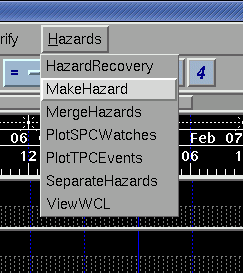
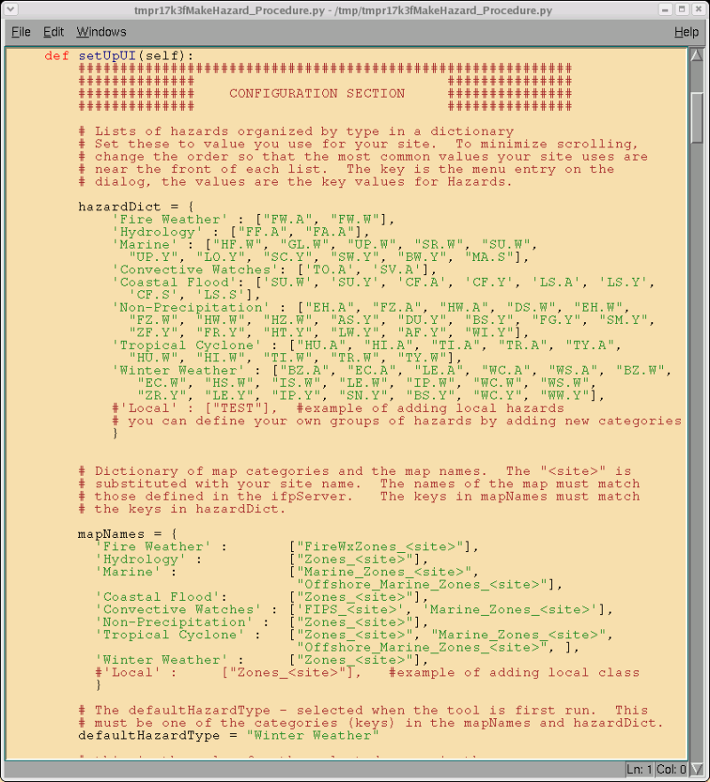

MakeHazard
A Procedure for Creating Hazards
The MakeHazard procedure is the primary interface for creating and
editing hazards in GFE, excluding convective and tropical
hazards, which have their own procedures (PlotSPCWatches
and PlotTCPEvents). For more on how
to use the MakeHazard tool
and general hazard methodology, check Hazard
Methodlogy.
Starting MakeHazard
Description of Interface
Shortcuts
Configuration
Starting MakeHazard
MakeHazard is started by selecting MakeHazard under
the Hazards
menu.

Description of MakeHazard
Interface
After selecting this, the tool interface will display

Here is the function of each component:
Map Area
Map - This
displays the area of a potential hazard visually.
Zoom In Button
- Zooms closer in on map.
Zoom Out Button
- Zoom further out on map.
Zoom 1:1 -
Returns map to default zoom level.
Clear All
-
Clears all selected counties from map.
Select
All -
Selects all selected counties on map.
Map Labels
- When checked, labels the zones (WIZ001 format) or counties (WIC001
format).
Select Hazard
Area
Hazard List
- Allows the selection of one hazard from list.
Hazard Category
Toggles - Allows selection of general categories of Hazards, and
changes Hazard List as needed.
ETN/Segment Number
- Allows entry of an ETN (Only TO.A or SV.A, not normally needed), or a
segment identifier.
Time Area
Start Hazard Time
- Sets the starting time of the hazard in the grid.
End Hazard Time
- Sets the ending time of the hazard in the grid.
Invocation
Buttons
Run - Runs
the tool for selected settings
Run/Dismiss
- Runs the tool, then closes.
Cancel -
Closes the tool without running.
Shortcuts
The following tips may help:
- The Hazard Grids are automatically separated when the procedure
is started.
- It can be tedious to always have to select the time area, zones,
category, and hazard. If you already have a temporary
hazard element selected (simply by clicking on the weather element or a
grid in that weather element, then the time selectors, the hazard, and
the category and zones will automatically be set when the interface is
displayed.
Configuration
of MakeHazard
You can easily
configure the hazards which display in the hazard lists, and the
categories available, by creating an override at SITE level to the
procedure. In the configuration
section, located in method setUI, you can set the map types, hazard
lists, categories, default categories, and more.
See the example below.

The most important sections for configuration are the mapNames and the
hazardDict. Each hazard that you want to appear in the
menus must be associated with a category. Each category
must be associated with a map background (or map
backgrounds). For example, the HU.W (Hurricane Warning) is
part of the "Tropical Cyclone" group in the hazardDict. The
"Tropical Cyclone" category uses the Zones_<site>,
Marine_Zones_<site>, and Offshore_Marine_Zones_<site> map
backgrounds.
If the lists are not synchronized properly, then the procedure will not
work. Categories may be added and removed, and individual
hazards may be added and removed (including locally defined
hazards). The list of map backgrounds contain <site>,
which is replaced with your real site identifier when the procedure
runs. The list of map backgrounds assumes that you are using the
standard set of map shapefiles and map names as defined in Maps.py.
How It Works
The MakeHazard first separates out the Hazards grid into separate haz*
temporary weather elements. The user chooses the type of
event, the time, and the area (either on the grid as a selected area or
by using the map), and presses Run or Run/Dismiss. The
temporary weather element is created (if not already there) and the
grid is created/edited as appropriate.